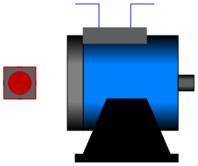

.
Modelica
.
Electrical
.
Machines
.
Interfaces
.
PartialBasicInductionMachine
Information
Partial model for induction machine models
Generated at 2016-07-13T15:55:45Z by
OpenModelica
OpenModelica 1.11.0~dev-38-g67b62bf